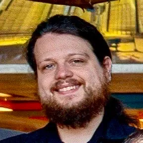
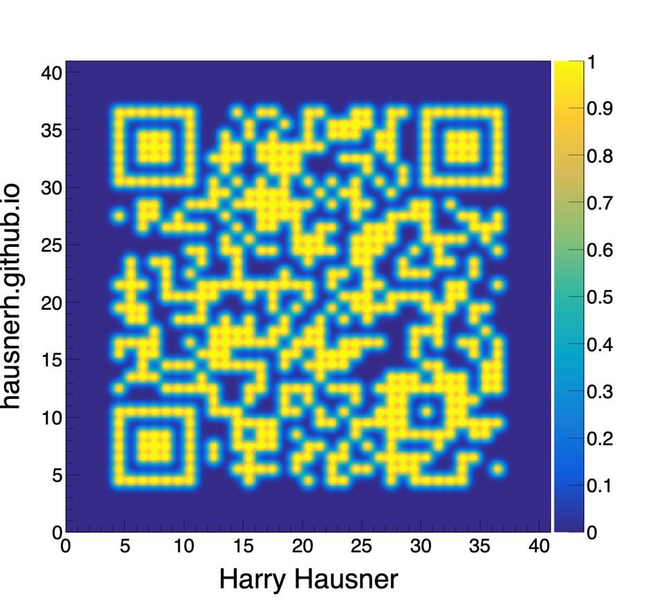

Harry HausnerCurriculum Vitae |
|
 Harry Hausner
Curriculum Vitae

About Me
I am Harry, a neutrino experimentalist interested in exploring 4-flavor oscillation physics and physics beyond the standard model with accelerator neutrinos. I received my PhD from the University of Wisconsin–Madison where I worked in Brian Rebel's group, implementing a covariance matrix fitting technique for use in searches for sterile neutrinos at NOvA. Upon completion of my doctoral program I joined Fermilab as a postdoctoral researcher under Angela Fava. Here I have brought my experience with systematics to help push the ICARUS single-detector muon neutrino disappearance search and prepare for the SBN multi-detector search. This joint analysis will make a definitive measurement of oscillations due to eV²-scale mass-squared splitting. In addition to my research, I find it important to foster community within neutrino physics, especially as it relates to helping younger physicists find their footing. I take great pride in having served multiple times as a SULI mentor, guiding undergraduate students in a research project, and have been actively involved in SBN Young, a grassroots organization of graduate students and other young researchers within the SBN Program where we can support and help one another. There is no physics without the physics community, and each of us has a role to play in helping each other achieve the best science possible.
Education & Work
Postdoctoral Research Associate
2022–Present
Fermi National Accelerator Laboratory
PhD in Physics
August 2022
University of Wisconsin–Madison
MA in Physics
August 2019
University of Wisconsin–Madison
BS in Physics & Mathematics summa cum laude
June 2016
Union College – Schenectady, NY
Awards & Honors
Van Vleck Fellowship in Physics
2016
University of Wisconsin–Madison
Sigma Pi Sigma Physics Honors Society
2015
Union College – Schenectady, NY
Pi Mu Epsilon Math Honors Society
2014
Union College – Schenectady, NY
Research
Detector Hardware
2022–Present
Neutrino Physics with ICARUS / SBN
2022–Present
Data Acquisition & Detector Operations at ICARUS
2022–Present
Sterile Neutrino Searches with NOvA
2018–2022
Recent Talks & Publications
Talk
“Improving Detector Systematic Uncertainties Through Data-Driven Machine Learning,” Neutrino Physics and Machine Learning — June 15, 2026
Talk
“Single Photon Searches at ICARUS with SPINE,” Neutrino Physics and Machine Learning — October 29, 2025
Talk
“Latest Results from the ICARUS Experiment at the Short-Baseline Neutrino Program,” Conference on the Intersection of Particle and Nuclear Physics — June 9, 2025
Paper
ICARUS Collaboration, “First Search for Sterile Neutrino Oscillation Leading to νμ Disappearance in the Booster Neutrino Beam at ICARUS,” arXiv:2603.22557
Paper
ICARUS Collaboration, “Search for a Hidden Sector Scalar from Kaon Decay in the Dimuon Final State at ICARUS,” Phys. Rev. Lett. 134 (2025) 15, 151801
Paper
NOvA Collaboration, “Dual-Baseline Search for Active-to-Sterile Neutrino Oscillations in NOvA,” Phys. Rev. Lett. 134 (2025) 8, 081804
Teaching & Mentorship
Italian Summer Student Mentor
2024
Fermi National Accelerator Laboratory
SULI Mentor
2023–2024
Fermi National Accelerator Laboratory
Teaching Assistant
2016–2018
University of Wisconsin–Madison, Department of Physics
Organizational Experience
Neutrino Physics Center
2025–Present
Fermi National Accelerator Laboratory
ICARUS Shift Czar
2022–2023
ICARUS Collaboration
Teaching Assistance Association — Physics Dept. Steward
2016–2017
University of Wisconsin–Madison
Society of Physics Students
2012–2016
Union College – Schenectady, NY
|